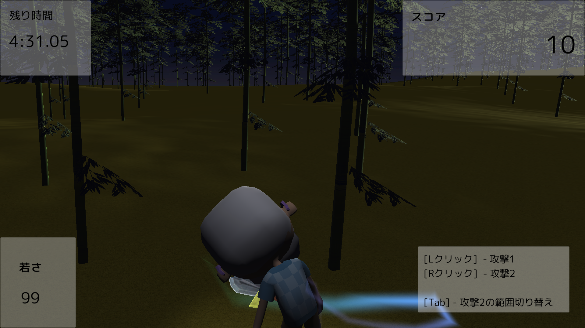
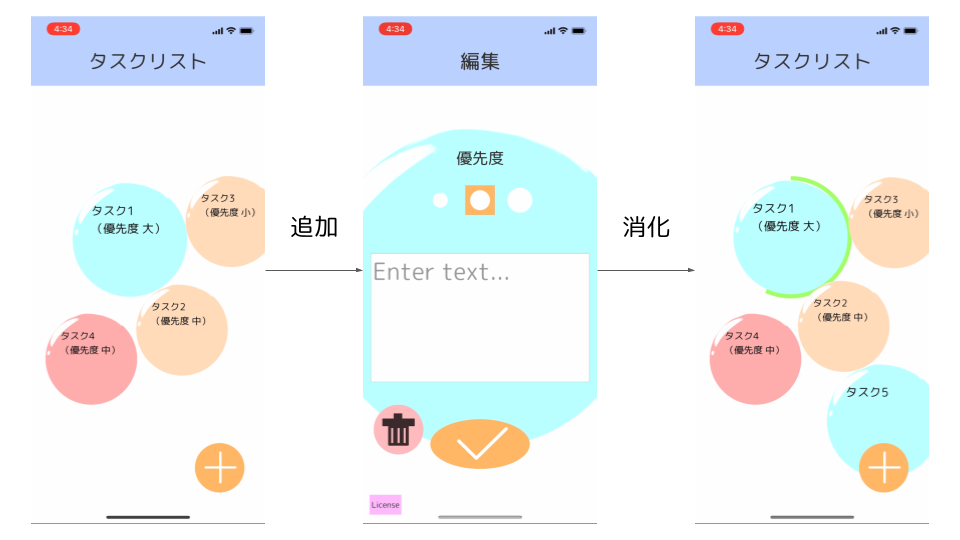
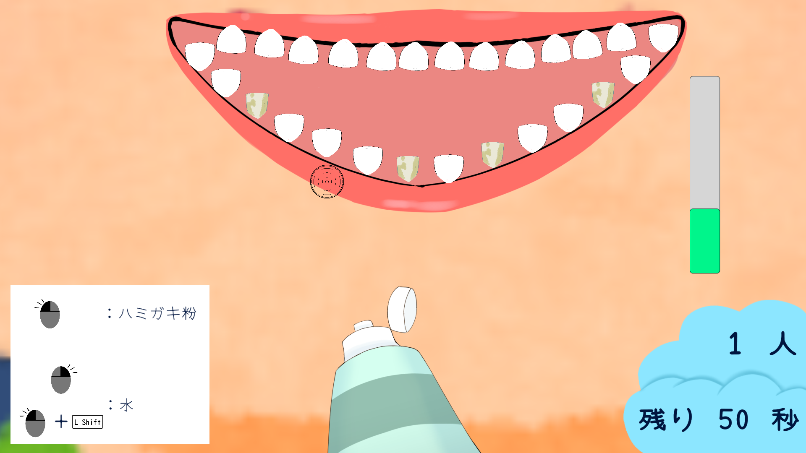

自己紹介
Motoki
情報系の大学院に所属する修士２年生です（2022 年 4 月現在）。
Java を中心にオブジェクト志向プログラミングについて学習し、デザインパターン等を用いた設計・アルゴリズム等を学習しています。
VTuber への興味から Unity を触り始め、フェイストラッキングアプリを制作したことをきっかけに、Unity 開発に取り組むようになりました。
最近では、以前から取り組んでみたかったゲーム制作や、アプリ等を制作しています。
最先端のエンタメに携わりたいという思いから、個人的にゲーム開発を行ったり、長期インターンシップに参加させていただき、xR 開発に挑戦しています。
GitHub: https://github.com/nemlyc
目次
スキル
プログラミング
Unity : ☆☆☆☆
C# : ☆☆☆☆
Java : ☆☆☆
デザインツール
ClipStudioPaint : ☆☆☆☆☆
Adobe XD : ☆☆☆☆
Photoshop : ☆☆☆
ビジョン
私は 「面白いことに全力で取り組み、周囲に還元する。」という指針で活動していこうと考えています。
- なぜ周囲なのか
- 本当は色々な人に確実に還元したいところですが、個人で確実なできる範囲、手の届く範囲に注力していこうという考えからです。
- なぜ還元なのか
- 比較的誰かの感情の影響を受けやすいタイプであり、誰かが楽しそうにしていると自分も不思議と楽しい気分になる経験があります。
- 私はその連鎖の起点となれるようにありたいと考えています。
それらの達成のために、「クリエイティブなソリューションを真正面からぶつける。」ことを心がけていきます。
すべての課題に対しての打開策を創っていき、関係者全員がプラスの感情になるよう働きかけていこうと思います。
このさきやってみたいこと
エンターテインメントに携わっていきたいという思いがあり、コンテンツの世界観づくりから関わっていきたいです。
世界観にマッチする機能や表現を議論して提案してみたり、実装を行っていきたいと考えております。
私の興味のある職種として、エンジニア・デザイナーがあり、いずれも積極的に個人の成果物に取り入れる形で実践的に取り組んでおります。
公開作品（ピックアップ）
1. Taketori
概要
かぐや姫の話をモチーフとした、3D アクションゲームです。 無数に広がる竹林で、竹を伐採しながらかぐや姫が入った竹を切ることを目指すゲームです。

2. バブルタスク
概要
タスク一つひとつを泡に見立て、破裂させることで消化するインタラクティブなタスク管理アプリを実装しました。
泡を長押しするとゲージが進行し、一周すると泡が破裂します。

3. シャカシャカしゅーてぃんぐ
概要
歯磨き粉と水で次々に来る患者の歯をきれいにしていくシューティングゲームです。
制限時間内により多くの患者の歯を磨くことが目標です。
